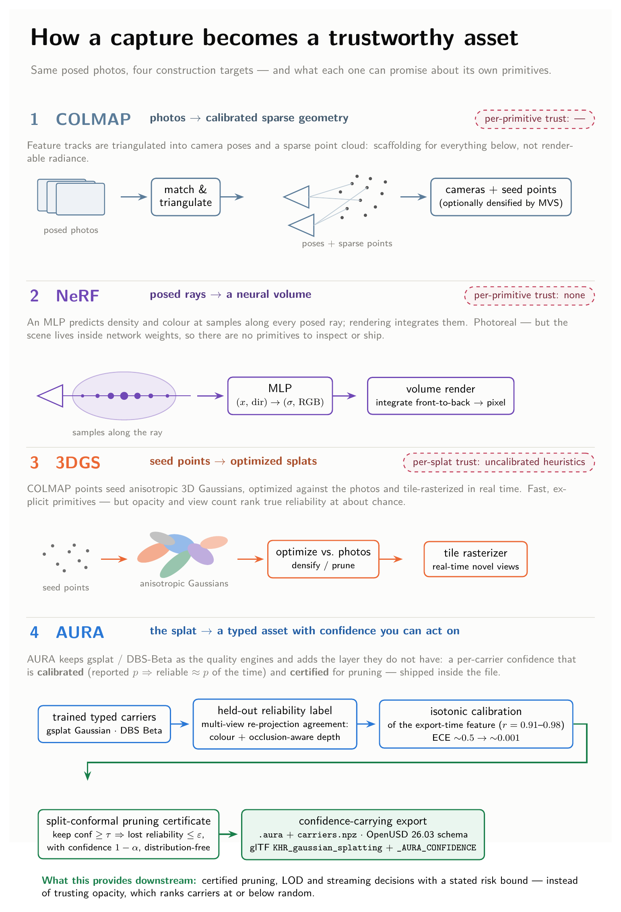
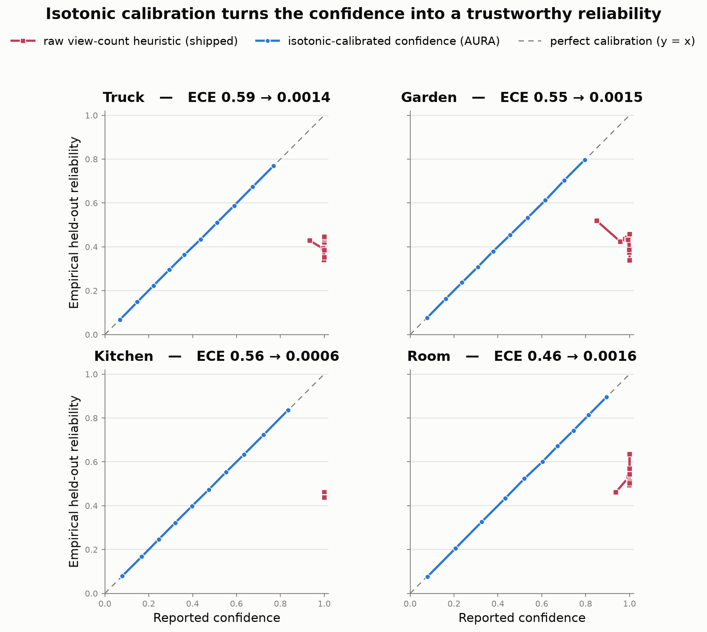
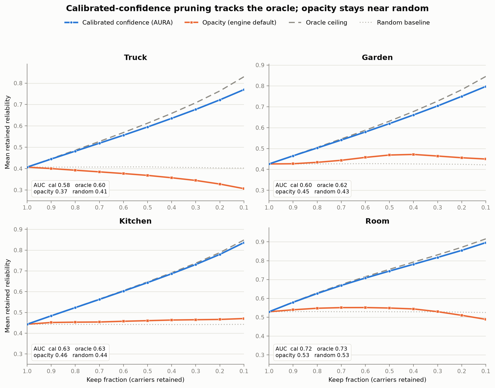
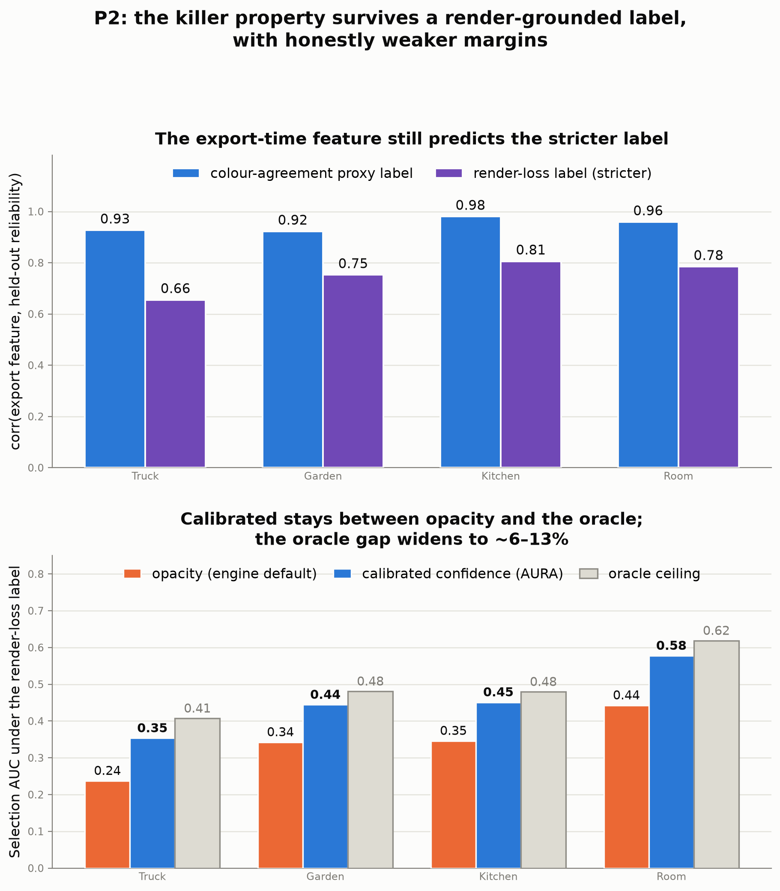

Calibrated confidence and certified pruning for splat assets
AURA is the trust layer for splats: every carrier carries a calibrated confidence turned into a distribution-free certificate and a certified streaming ladder. That confidence travels in glTF, USD, and SPZ exports, and every claim is gate-checked and CPU-reproducible.
python -m venv .venv && source .venv/bin/activate pip install --upgrade pip pip install -e ".[dev,gpu,assets]" # from source # or from PyPI: pip install aura-splat
01
Evidence
| Calibration ECE (raw → calibrated) | 0.59→0.001 on Truck; 0.55→0.002 Garden, 0.56→0.001 Kitchen, 0.46→0.002 Room |
|---|---|
| Pruning selection | 0.77–0.90 retained reliability at 10%-keep vs opacity 0.31–0.49; calibrated 0.58–0.72 vs opacity 0.37–0.53 |
| Cross-scene transfer | ±0.0004 selection AUC vs in-scene on all 24 off-diagonal scene pairs |
| Certified LOD bounds | 16/16 bounds hold (12 non-trivial + 4 trivial) on disjoint eval halves, family-wise 1−α = 0.9 |
| Typed-carrier quality | +0.80 dB mean PSNR over fixed-Gaussian control across 8 scenes (DBS reproduction, frozen-β control) |
| True 3DGS control (Truck) | +0.45 dB adaptive Beta over gsplat-3DGS MCMC; frozen control within 0.03 dB |
| BVH ray query | 0 mismatches vs brute force incl. 300 rays on 129,531-carrier truck; 3.2× CPU batch speedup |
| CPU test suite | 1928 passed, 37 environment-gated skips, 0 failures; 17/17 publication gates |
02
Media



03
Install & verify
pytest -m "not gpu and not local_data" # expect 1928 passed, 37 skipped, 0 failed aura publication-validation-report # expect publicationReady: true, 17/17 gates; fresh clone 15/17
04
Limits
What this release does not claim (from the release notes):
- GPU PRISM/CUDA quality validation; two local-data gates need
truck-sidecar.aura/carriers.npz, which are not present.